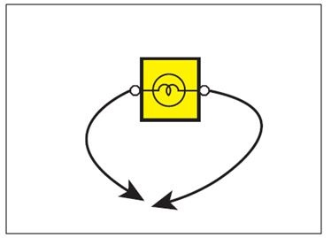
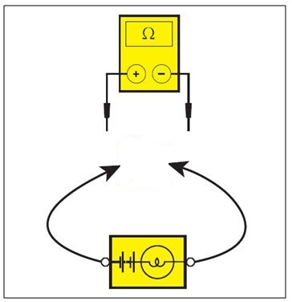
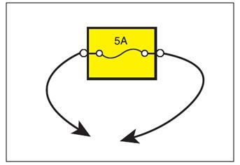
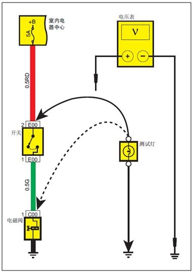
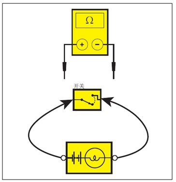
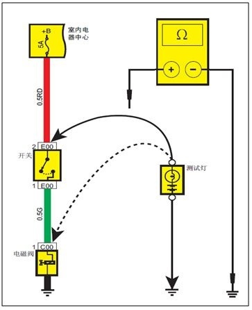

诊断和维修方法说明
故障诊断流程
对于电路故障，按照以下步骤进行检查：
-
确认客户所抱怨的内容： 为了正确的维修，确认客户所描述的故障现象。仔细核查相关部件以确认故障现象并作好记录。不允许在未确定故障范围及原因之前对部件进行分解工作。
-
电路图识读及原因分析：根据子系统电路图对故障部件从电源到接地的整个电路进行分析、判断，确定维修操作方案。如果无法确定维修操作方案，参考维修手册中的说明与操作中对该系统的描述，明白其工作原理。同时需要检测与故障电路公用的其他电路，如在电路图上参考保险丝、接地、开关等公用的系统电路。检测在步骤1 未检查的公用电路。如果公用电路中的其它部件工作正常，则故障就在本身电路上。如果公用电路上的部件都有故障，则可能保险丝或接地有故障
-
电路及部件的检查：任何时候电路图都应该结合维修手册使用，参考维修手册中对电路及部件的检查流程。对于有模块控制的电路，应该充分结合诊断测试仪对部件进行测试，有效的故障诊断应该是具有逻辑性的合理操作过程。充分接合维修手册中的故障诊断流程，从可能性最大的原因和最容易检查的部件开始检查。
-
故障维修：发现故障，参考电路图及维修手册中对故障处理方法的描述。
-
确认电路工作状态：维修结束后，确认故障已经排除，应该重新检测所有功能是否已经恢复正常。如果是保险丝熔断故障，则应该对所有共用该保险丝的电路进行检测。
故障诊断设备
-
电压表及测试灯 ：可以用测试灯或电压表检查电路状态，检查有无电压，试灯由一对导线和12 V 灯泡组成。检查时，一根导线接地，另一根导线连接在某个测量点上。如果灯泡点亮，说明测量点上有电源供应。

危险
检查电子控制模块的电压时，禁止使用测试灯对模块电路进行检查，这样会损坏模块内部电路。必须使用 10MΩ或内阻更高的数字电压表来检查 (例如检 ECU的电压电路 )电压表的使用方法与试灯相同，不同的是电压表还能显示当前电压的大小。在使用电压表检测电压时，应该使用高阻抗的电压表，在导线连接存在虚接的情况下电压表显示的电压正常，但该电压并不能成功带动负载正常工作。 - 自带电源的测试灯及电阻表

用自带12 V电源的测试灯或电阻表检查回路的导通与否。自带电源的测试灯由灯泡、电池和两根导线组成，两根导线相连接时灯泡亮。检测前，应断开蓄电池负极导线并拔出该电路的保险丝。利用测试灯的两根导线分别连接需要检查导通的两个测量点，如果测试灯正常点亮，则线路是正常导通的。
note
检查模块电路时，禁止使用自带电源的测试灯，这样会损坏模块的内部电路。必须使用 10 MΩ或内阻更高的数字电阻表来检查。电阻表的使用方法与电压相同，但电阻表能显示当前的电阻值，显示的电阻越低表示导通越良好 -
带保险丝的跨接线

在检查开环( 线路断路) 电路时需要使用跨接线来确定断路点。跨接线是与被测导线串联使用的工具
note
为了保护被检测电路，禁止使用比电路额定容量大的保险丝检查相关电路。禁止模块连接在线路中的情况下 (例如 ： ECU、 TCU)使用跨接线代替输入或输出信号。这样会损坏模块的内部电路。
故障检测
-
电压检测

电压检测是检查某一点是否有电压。当检查导线接头的某一个端子时，可以不分解导线接头，利用线路检测工具中的正极连接线探针从导线接头的背面插入进行测试。-
用试灯或电压表检查电压时，先把检测工具的负极与蓄电池负极相连接
-
然后把试灯或电压表的另一端导线连接到要检测的位置上。
-
如果检测工具是电压表，显示值比规定值小于1 V 以上，说明电路有故障。如果检测工具是试灯，试灯不能正常点亮说明电路有故障。
-
-
电压降测试

1.电压表正极导线连接到接近蓄电池的导线的一端( 接头侧或开关侧)。
2.电压表负极导线连接到导线的另一端( 接头或开关的另一侧)。
3.断开或接合开关，使电路工作。
4.电压表将显示两个点之间的电压差。
5.如果电压差超过0.1 V (5 V 电路应小于50mV)，可以表明电路上有故障，检查松动、氧化或腐蚀的连接电路。
-
通电测试

1.断开蓄电池负极线束。
2.用自带电源测试灯或电阻表的一根引线连接到要检测的部件上。使用电阻表时，先把电阻表的两根导线短接，用调零器把电阻表调零。
3.用检测仪的另一导线连接到要检测的负载另一端子上。
4.自带电源试灯亮，表示导通；使用电阻表时，电阻很小或接近0 Ω，表示该部件具有良好的导通状态。
-
短路测试

1.断开蓄电池负极线束。
2.把自带电源测试灯或电阻表的一根导线连接到保险丝的输出端子上。
3.把自带电源的测试灯或电阻表的另一导线接地。
4.断开保险丝所有相关的电气负载。
5.从保险丝最近处依次排查线路。
6.自带电源试灯亮或电阻表显示值低于5Ω，说明这部分与接地短路。
note
如果不断开该保险丝所有的电气负载，在检查与灯光等低电阻负载电路时，电阻表会一直显示低电阻，这种情况下会引起误判。